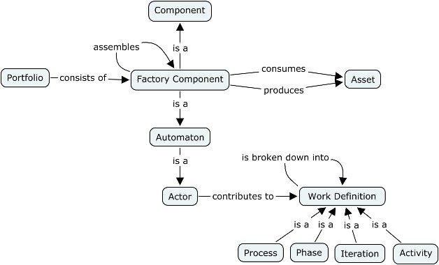

A Factory Component is a deployable software generation unit aiming at producing assets from inputs assets.
A factory component is a component with an interface, named contract, a set of viewpoints and a factory for the generation orchestration.
The purpose of factory components is to achieve complex, heterogeneous and large-scale production. Unlike generators with a defined technical scope of generation (e.g., text or model transformation), a factory component can embed several generation techniques, produce complex assets, such as languages, framework or tools, and cover the complete production lifecycle of assets. An heterogeneous generation can be realized individually by a factory component or collectivelly by a set of factory components in a generation chain.
Actually, a factory component is built on the "divide and conquer" strategy. A factory component cannot assume alone complex generations. It distributes them by assembly to other factory components. Every factory component has a generation objective and realizes the generation it is specialized for.
Regarding the process engineering, a factory component is an actor (a role in SPEM) that contributes to a work definition (SPEM term) (e.g., process, phase, iteration, activity). The intent is to progressively replace manual development tasks by automated tasks. Then, a factory component is not only a technique but becomes, when intensively used, a vector for common generation practices and structures the communication language between project team members. Over the time, the stake is to develop sharable factory component portfolios, that is homogeneous groups of generation topic know-how extensible by mutual team enrichment.

Figure 1. GLobal view of a Factory Component
A factory component consists of:
Beyond this structure, a factory component is generally specialized by its contents. Some factory components just contain viewpoint information (e.g., domain models, model-to-model mapping), others conduct the generation, or some are a conglomerate of viewpoints and orchestration. A factory component is hyper-specialized when it contains only one information type, such as generation patterns on a generation topic.
Two kinds of relationships exist between factory components.
Delegation relationship. A factory component delegates its work to another one. This implies that every factory used component has an identified generation role among the others. The following figure presents a tool infrastructure factory component that delegates its generation to factory components for model management, model check, transformation and presentation with user interfaces. The model management API generation delegates its generation to two factory components, one for code generation (e.g., Java code) and another one for documentation (e.g., Java Doc.).
Resource provider relationship. In this case, a factory component has one or several viewpoints which provide generation information. For instance, a factory component contains generation patterns in a generation viewpoint (e.g., a web site generation). Those patterns are used by factory component users (e.g., users of the patterns for a web site generation).
Figure 2. Assembly of Factory Component
Finally, there are four types of factory components:
A factory component can adopt three kinds of stage during its lifecycle: development, execution and exchange. The development, or edition, consists in defining and populating the factory component contents. The execution is the stage when a factory component is activated and produces the expected assets. During those two stages, there are two complementary lifecycles. A "in the small" lifecycle only focuses on a factory component: i) during the factory component development, the viewpoints and orchestration are defined; ii) at the execution, the factory component generates the expected assets. A "in the large" lifecycle focuses on factory component assembly, covering progressively all the generation chain: i) during the factory component development, factory components are assembled, ii) at the execution time, factory components of the generation chain are successively executed.

Figure 3. Factory Component Lifecycle
Exchange is the last state. A factory component is a generation unit, actually an Eclipse plug-in. A factory component exchange consists in publishing (i.e., exporting) and harvesting (i.e., importing) factory components between teams and team members. The team that reuses off-the-shelf factory components integrate them in its generation chain, or specialize them.